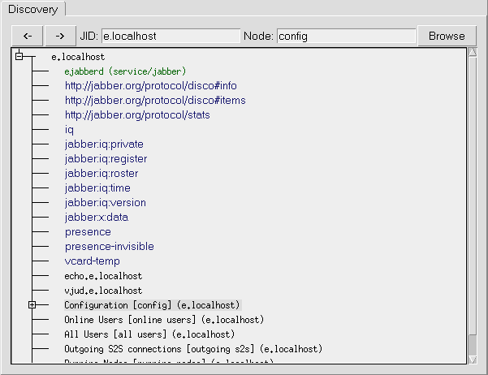
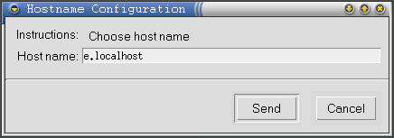
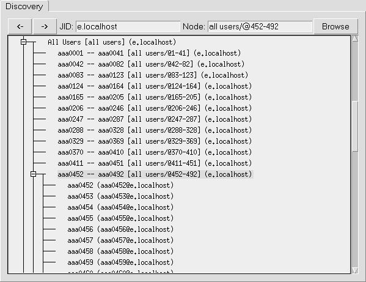
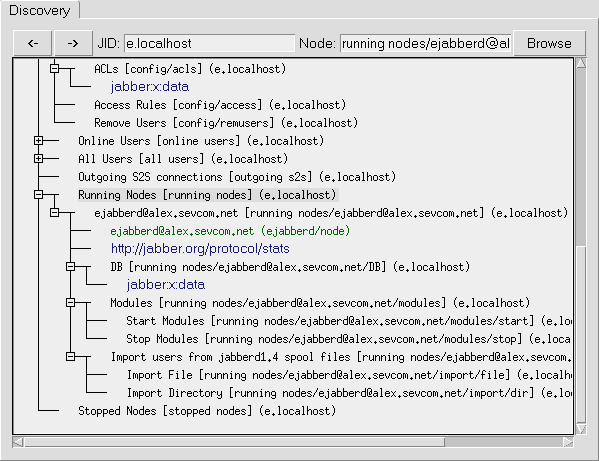

Ejabberd Installation and Operation Guide
July 12, 2003
Table of Contents
1 Introduction
ejabberd is a Free and Open Source fault-tolerant distributed Jabber
server. It is writen mostly in Erlang.
The main features of ejabberd is:
-
Works on most of popular platforms: *nix (tested on Linux and FreeBSD)
and Win32
- Distributed: You can run ejabberd on a cluster of machines and all of
them will serve one Jabber domain.
- Fault-tolerance: You can setup an ejabberd cluster so that all the
information required for a properly working service will be stored
permanently on more than one node. This means that if one of the nodes
crashes, then the others will continue working without disruption.
You can also add or replace more nodes ``on the fly''.
- Built-in Multi-User
Chat service
- Built-in IRC transport
- Built-in
Publish-Subscribe
service
- Built-in Jabber Users Directory service based on users vCards
- Support for
JEP-0030
(Service Discovery).
- Support for
JEP-0039
(Statistics Gathering).
- Support for xml:lang attribute in many XML elements
2 Installation
2.1 Installation Requirements
To compile ejabberd, you will need the following packages:
-
GNU Make;
- GCC;
- libexpat 1.95 or later;
- Erlang/OTP R8B or later.
To compile ejabberd in MS Windows environment, you will need the following
packages:
2.2 Obtaining
Currently no stable version has been released.
The latest alpha version can be retrieved from CVS.
-
export CVSROOT=:pserver:anonymous@jabberstudio.org:/home/cvs
- cvs login
- Press Enter when asked for a password
- cvs -z3 co ejabberd
2.3 Compilation
./configure
make
TBD
-
Install Erlang emulator (for example, into
C:\Program Files\erl5.1.2).
- Install Expat library into
C:\Program Files\Expat-1.95.6
directory. Copy file C:\Program Files\Expat-1.95.6\Libs\libexpat.dll
to your Windows system directory (for example, C:\WINNT or
C:\WINNT\System32)
- Install Iconv library into
C:\Program Files\GnuWin32 directory.
Copy file C:\Program Files\GnuWin32\bin\libiconv-2.dll to your
Windows system directory.
Note: Instead of copying libexpat.dll and libiconv-2.dll to Windows
directory, you can add directories
C:\Program Files\Expat-1.95.6\Libs and
C:\Program Files\GnuWin32\bin to PATH environment
variable.
- Being in
ejabberd\src directory run:
configure
nmake -f Makefile.win32
- To build MUC, IRC and pub/sub modules run
nmake -f Makefile.win32
in ejabberd\src\mod_muc, ejabberd\src\mod_muc and
ejabberd\src\mod_pubsub directories
- Edit file
ejabberd\src\ejabberd.cfg and run
werl -s ejabberd -name ejabberd
- Enjoy!
Some recent versions of Erlang distribution it seems have bug in crypto
application, so ejabberd could be built but users can't use digest
authentication (only plain-text). Also it seems SSL support is broken in
Windows distribution of Erlang emulator.
2.4 Starting
... To use more than 1024 connections, you will need to set environment
variable ERL_MAX_PORTS:
export ERL_MAX_PORTS=32000
Note that with this value ejabberd will use more memory (approximately 6MB
more)...
erl -name ejabberd -s ejabberd
TBD
3 Configuration
3.1 Initial Configuration
The configuration file is initially loaded the first time ejabberd is
executed, when it is parsed and stored in a database. Subsiquently the
configuration is loaded from the database and any commands in the configuration
file are appended to the entries in the database. The configuration file
consists of a sequence of Erlang terms. Parts of lines after `%' sign
are ignored. Each term is tuple, where first element is name of option, and
other are option values. E. g. if this file does not contain a ``host''
definition, then old value stored in the database will be used.
To override old values stored in the database the following lines can be added
in config:
override_global.
override_local.
override_acls.
With this lines old global or local options or ACLs will be removed before
adding new ones.
Option hostname defines name of Jabber domain that ejabberd
serves. E. g. to use jabber.org domain add following line in config:
{host, "jabber.org"}.
3.1.2 Access Rules
Access control in ejabberd is performed via Access Control Lists (ACL). The
declarations of ACL in config file have following syntax:
{acl, <aclname>, {<acltype>, ...}}.
<acltype> can be one of following:
-
all
- Matches all JIDs. Example:
{acl, all, all}.
- {user, <username>}
- Matches local user with name
<username>. Example:
{acl, admin, {user, "aleksey"}}.
- {user, <username>, <server>}
- Matches user with JID
<username>@<server> and any resource. Example:
{acl, admin, {user, "aleksey", "jabber.ru"}}.
- {server, <server>}
- Matches any JID from server
<server>. Example:
{acl, jabberorg, {server, "jabber.org"}}.
- {user_regexp, <regexp>}
- Matches local user with name that
matches <regexp>. Example:
{acl, tests, {user, "^test[0-9]*$"}}.
- {user_regexp, <regexp>, <server>}
- Matches user with name
that matches <regexp> and from server <server>. Example:
{acl, tests, {user, "^test", "localhost"}}.
- {server_regexp, <regexp>}
- Matches any JID from server that
matches <regexp>. Example:
{acl, icq, {server, "^icq\\."}}.
- {node_regexp, <user_regexp>, <server_regexp>}
- Matches user
with name that matches <user_regexp> and from server that matches
<server_regexp>. Example:
{acl, aleksey, {node_regexp, "^aleksey", "^jabber.(ru|org)$"}}.
- {user_glob, <glob>}
-
- {user_glob, <glob>, <server>}
-
- {server_glob, <glob>}
-
- {node_glob, <user_glob>, <server_glob>}
- This is same as
above, but uses shell glob patterns instead of regexp. These patterns can
have following special characters:
-
*
- matches any string including the null string.
- ?
- matches any single character.
- [...]
- matches any of the enclosed characters. Character
ranges are specified by a pair of characters separated by a `-'.
If the first character after `[' is a `!', then any
character not enclosed is matched.
The following ACLs pre-defined:
-
all
- Matches all JIDs.
- none
- Matches none JIDs.
An entry allowing or denying different services would look similar to this:
{access, <accessname>, [{allow, <aclname>},
{deny, <aclname>},
...
]}.
When a JID is checked to have access to <accessname>, the server
sequentially checks if this JID mathes one of the ACLs that are second elements
in each tuple in list. If it is matched, then the first element of matched
tuple is returned else ``deny'' is returned.
Example:
{access, configure, [{allow, admin}]}.
{access, something, [{deny, badmans},
{allow, all}]}.
Following access rules pre-defined:
-
all
- Always return ``allow''
- none
- Always return ``deny''
3.1.3 Shapers Configuration
With shapers is possible to bound connection traffic. The declarations of
shapers in config file have following syntax:
{shaper, <shapername>, <kind>}.
Currently implemented only one kind of shaper: maxrate. It have
following syntax:
{maxrate, <rate>}
where <rate> means maximum allowed incomig rate in bytes/second.
E. g. to define shaper with name ``normal'' and maximum allowed rate
1000 bytes/s, add following line in config:
{shaper, normal, {maxrate, 1000}}.
3.1.4 Listened Sockets
Option listen defines list of listened sockets and what services
runned on them. Each element of list is a tuple with following elements:
-
Port number;
- Module that serves this port;
- Options to this module.
Currently three modules are implemented:
-
ejabberd_c2s
- This module serves C2S connections.
The following options are defined:
-
{access, <access rule>}
- This option defines access of users
to this C2S port. Default value is ``all''.
- {shaper, <access rule>}
- This option is like previous, but
use shapers instead of ``allow'' and ``deny''. Default
value is ``none''.
- ejabberd_s2s_in
- This module serves incoming S2S connections.
- ejabberd_service
- This module serves connections from Jabber
services (i. e. that use the jabber:component:accept namespace).
For example, the following configuration defines that C2S connections are
listened on port 5222 and 5223 (SSL) and denied for user ``bad'', S2S
on port 5269, and that service conference.example.org must be
connected to port 8888 with a password ``secret''. Also all users
except admins have traffic limit 1000 b/s.
{acl, blocked, {user, "bad"}}.
{access, c2s, [{deny, blocked},
{allow, all}]}.
{shaper, normal, {maxrate, 1000}}.
{access, c2s_shaper, [{none, admin},
{normal, all}]}.
{listen, [{5222, ejabberd_c2s, [{access, c2s},
{shaper, c2s_shaper}]},
{5223, ejabberd_c2s, [{access, c2s},
{ssl, [{certfile, "/path/to/ssl.pem"}]}]},
{5269, ejabberd_s2s_in, []},
{8888, ejabberd_service,
[{host, "conference.example.org", [{password, "secret"}]}]}
]}.
Option modules defines the list of modules that will be loaded after
ejabberd startup. Each list element is a tuple where first element is a
name of a module and second is list of options to this module. See
section A for detailed information on each module.
Example:
{modules, [
{mod_register, []},
{mod_roster, []},
{mod_configure, []},
{mod_disco, []},
{mod_stats, []},
{mod_vcard, []},
{mod_offline, []},
{mod_echo, [{host, "echo.localhost"}]},
{mod_private, []},
{mod_time, [{iqdisc, no_queue}]},
{mod_version, []}
]}.
3.2 Online Configuration and Monitoring
To perform online reconfiguration of ejabberd you will need to have
mod_configure loaded (see section A.4). It is also highly
recommended to load mod_disco as well (see section A.5),
because mod_configure is highly integrated with it. Additionally it is
recommended to use a disco- and xdata-capable client such as
Tkabber
(which was developed synchronously with ejabberd, its CVS version
supports most of ejabberd features).
On disco query ejabberd returns following items:
-
Identity of server.
- List of features, including defined namespaces.
- List of JIDs from route table.
- List of disco-nodes described in following subsections.

Figure 1: Tkabber Discovery window
3.2.1 Node config: Global Configuration
Under this node the following nodes exists:
Node config/hostname
Via jabber:x:data queries to this node possible to change host name of
this ejabberd server. (See figure 2) (Currently this works
correctly only after a restart)

Figure 2: Editing of hostname
Node config/acls
Via jabber:x:data queries to this node it is possible to edit ACLs list.
(See figure 3)

Figure 3: Editing of ACLs
Node config/access
Via jabber:x:data queries to this node it is possible to edit access
rules.
Node config/remusers
Via jabber:x:data queries to this node it is possible to remove users. If
removed user is online, then he will be disconnected. Also user-related data
(e.g. his roster) is removed (but appropriate module must be loaded).
3.2.2 Node online users: List of Online Users
3.2.3 Node all users: List of Registered Users

Figure 4: Discovery all users
3.2.4 Node outgoing s2s: List of Outgoing S2S connections
3.2.5 Node running nodes: List of Running ejabberd Nodes

Figure 5: Discovery running nodes
3.2.6 Node stopped nodes: List of Stopped Nodes
TBD
4 Distribution
4.1 How it works
A Jabber domain is served by one or more ejabberd nodes. These nodes can
be run on different machines that are connected via a network. They all must
have the ability to connect to port 4369 of all another nodes, and must have
the same magic cookie (see Erlang/OTP documentation, in other words the file
~ejabberd/.erlang.cookie must be the same on all nodes). This is
needed because all nodes exchange information about connected users, S2S
connections, registered services, etc...
Each ejabberd node have following modules:
-
router;
- local router.
- session manager;
- S2S manager;
This module is the main router of Jabber packets on each node. It routes
them based on their destinations domains. It has two tables: local and global
routes. First, domain of packet destination searched in local table, and if it
found, then the packet is routed to appropriate process. If no, then it
searches in global table, and is routed to the appropriate ejabberd node or
process. If it does not exists in either tables, then it sent to the S2S
manager.
4.1.2 Local Router
This module routes packets which have a destination domain equal to this server
name. If destination JID has a non-empty user part, then it routed to the
session manager, else it is processed depending on it's content.
4.1.3 Session Manager
This module routes packets to local users. It searches for what user resource
packet must be sended via presence table. If this resource is connected to
this node, it is routed to C2S process, if it connected via another node, then
the packet is sent to session manager on that node.
4.1.4 S2S Manager
This module routes packets to other Jabber servers. First, it checks if an
open S2S connection from the domain of the packet source to the domain of
packet destination already exists. If it is open on another node, then it
routes the packet to S2S manager on that node, if it is open on this node, then
it is routed to the process that serves this connection, and if a connection
does not exist, then it is opened and registered.
A Built-in Modules
A.1 Common Options
The following options are used by many modules, so they are described in
separate section.
A.1.1 Option iqdisc
Many modules define handlers for processing IQ queries of different namespaces
to this server or to user (e. g. to example.org or to
user@example.org). This option defines processing discipline of
these queries. Possible values are:
-
no_queue
- All queries of namespace with this processing
discipline processed immediately. This also means that no other packets can
be processed until finished this. Hence this discipline is not recommended
if processing of query can take relative many time.
- one_queue
- In this case created separate queue for processing
IQ queries of namespace with this discipline, and processing of this queue
done in parallel with processing of other packets. This discipline is most
recommended.
- parallel
- In this case for all packets with this discipline
spawned separate Erlang process, so all these packets processed in parallel.
Although spawning of Erlang process have relative low cost, this can broke
server normal work, because Erlang have limit of 32000 processes.
Example:
{modules, [
...
{mod_time, [{iqdisc, no_queue}]},
...
]}.
A.1.2 Option host
Some modules may act as services, and wants to have different domain name.
This option explicitly defines this name.
Example:
{modules, [
...
{mod_echo, [{host, "echo.example.org"}]},
...
]}.
A.2 mod_register
A.3 mod_roster
A.4 mod_configure
A.5 mod_disco
This module adds support for
JEP-0030 (Service
Discovery).
Options:
-
iqdisc
- http://jabber.org/protocol/disco#items and
http://jabber.org/protocol/disco#info IQ queries processing discipline.
- extra_domains
- List of domains that will be added to server
items reply
Example:
{modules, [
...
{mod_disco, [[{extra_domains, ["jit.example.com",
"etc.example.com"]}]]},
...
]}.
A.6 mod_stats
This module adds support for
JEP-0039 (Statistics Gathering).
Options:
-
iqdisc
- http://jabber.org/protocol/stats IQ queries
processing discipline.
TBD about access.
A.7 mod_vcard
A.8 mod_offline
A.9 mod_echo
A.10 mod_private
This module adds support of
JEP-0049 (Private XML
Storage).
Options:
-
iqdisc
- jabber:iq:private IQ queries processing discipline.
A.11 mod_time
This module answers UTC time on jabber:iq:time queries.
Options:
-
iqdisc
- jabber:iq:time IQ queries processing discipline.
A.12 mod_version
This module answers ejabberd version on jabber:iq:version queries.
Options:
-
iqdisc
- jabber:iq:version IQ queries processing discipline.
B I18n/L10n
Many modules supports xml:lang attribute inside IQ queries. E. g.
on figure 6 (compare it with figure 1) showed
reply on following query:
<iq id='5'
to='e.localhost'
type='get'>
<query xmlns='http://jabber.org/protocol/disco#items'
xml:lang='ru'/>
</iq>

Figure 6: Discovery result when xml:lang='ru'
This document was translated from LATEX by
HEVEA.